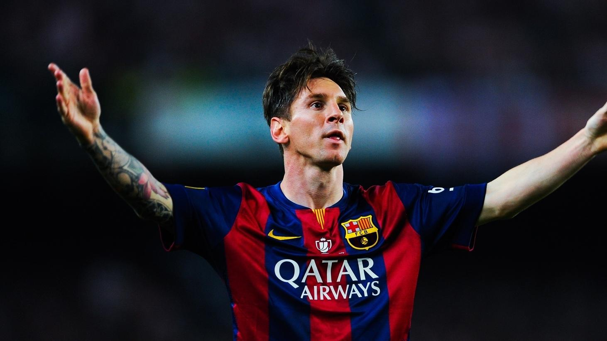

Lionel Messi |
| Inicio |
Biografia |
Logros |
Contactos |
 |
Lionel Andrés Messi Cuccittini, conocido como Leo Messi, es un futbolista argentino que juega como delantero o centrocampista. Jugador histórico del Fútbol Club Barcelona, al que estuvo ligado veinte años, desde 2021 integra el plantel del Paris Saint-Germain de la Ligue 1 de Francia. |
|  |
 |
 |
 |
Con el Barcelona ha ganado 35 títulos, entre ellos, diez de La Liga, cuatro de la Liga de Campeones de la UEFA y siete de la Copa del Rey. |
El 10 de julio, en la final contra Brasil en el Maracaná, Argentina ganó 1-0 con gol de Di María. En su quinta final internacional, Messi consiguió su primer título con Argentina. Fue nombrado mejor jugador y máximo goleador del torneo |
Considerado con frecuencia el mejor jugador del mundo y uno de los mejores de todos los tiempos, es el único futbolista en la historia que ha ganado siete veces el Balón de Oro, seis premios de la FIFA al mejor jugador del mundo y seis Botas de Oro. En 2020, se convirtió en el primer futbolista y el primer argentino en recibir un premio Laureus, además de ser incluido en el Dream Team del Balón de Oro. |